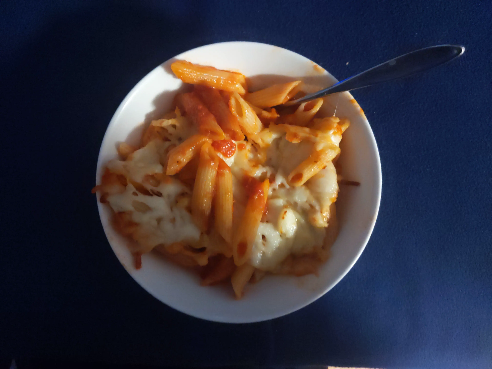
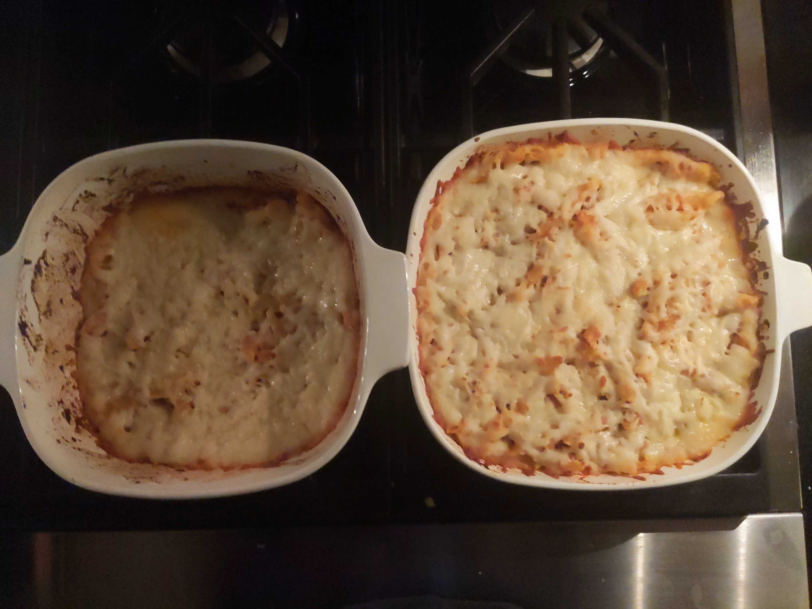

Baked Mostaccioli

Baked pasta cooked in dish with spicy sauce
- ⏲️ Prep time: 15 min
- 🍳 Cook time: 15-20 min
- 🍽️ Servings: 8 bowls
Ingredients
- 24 oz or 1 jar of Fradiavolo Sauce (Victoria)
- 1 box Mostaccioli Rigati or Penne Rigati (Ronzoni)
- ~8 oz shredded Mozzarella Cheese (Poly-O)
- I’ve found that pre-shredded cheese doesn’t taste as good as shredding it right before cooking.
- 2x 2 quart (8") baking dishes or 1 large baking dish (see picture below)
Directions
- Bring a pot to a boil and cook pasta for 6 minutes (very al dante).
- Put pasta and sauce in baking dish(es) and mix well.
- Cover pasta and sauce generously with grated cheese until you can’t see the pasta.
- Bake at 350°F / 175°C for 20 minutes
- Or 375°F / 190°C for 15 minutes on convection bake.

Contributors
- Recipe created by Dan
- Refined & Uploaded by Zyansheep.